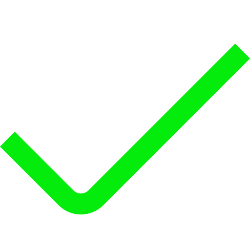

консультация по биоритмам
Консультация
"Биоритмы"
Каждый человек живет по своим биологическим ритмам. Ведь мы являемся волной и частицей Вселенной одновременно.
Находясь в постоянном энергетическом движении , мы принимаем на себя давление пространства и порой устаём.
Часто наша деловая активность падает в разгар рабочего дня, а к ночи нас увлекают идеи. Вот почему важно знать свои биоритмы.
Полная консультация
1000 р.

Для вас составляется индивидуальный график
На графике видно, когда у вас происходит активность, а когда лучше отдохнуть
Прилагается расшифровка графика, со всеми особенностями
В расшифровке описано - когда лучше активничать, во сколько ложиться спать, во сколько лучше всего вставать